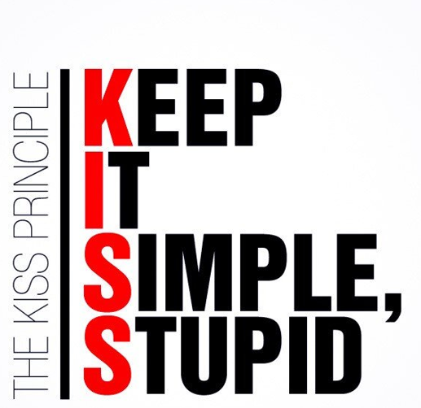

הדרישות בטקסט הן הקלט. היום נהפוך אותן למודל שאפשר לתקשר, לאמת — ולתת ל-AI.
נלווה מערכת אחת לאורך כל ההרצאה: מראיונות, דרך תרשים תרחישי שימוש (use case), ועד קוד רץ בהרצאה 13.
"רבע שעה בין הרצאות, אין זמן לתור. רוצה להזמין מהטלפון, לשלם, ולדעת מתי מוכן. וצמחוני — שיהיה ברור מה מתאים לי."
"בצהריים אנחנו קורסים. רוצה לראות הכל בלוח אחד, לעדכן מה אזל, ובסוף היום מה נמכר. מי שמזמין מראש ולא בא — האוכל לפח."
"אני רק צריך לדעת מה להכין ובאיזה סדר. מסמן 'מוכן' והסטודנט מקבל הודעה. תשלומים? לא התפקיד שלי."
"צריך לוודא שזו ההזמנה שלו וששולמה. רוצה קוד או ברקוד. ואם משהו השתבש — אני נותן החזר."
מהראיון המבולגן הזה ייגזרו השחקנים, הדרישות ותרשים תרחישי השימוש.
תזכורת: דרישה פונקציונלית מתארת פעולה/שירות שאפשר לבדוק שקרה — לא "המערכת תהיה נוחה", אלא מה בדיוק היא עושה.
| מזהה · עדיפות | הדרישה (SMART) | מקור |
|---|---|---|
| FR-1 Should | המערכת תאפשר לסטודנט לסנן את התפריט לפי פרופיל תזונתי (צמחוני / טבעוני / ללא-גלוטן) ולהציג רק פריטים תואמים. | סטודנט |
| FR-2 Must | המערכת תשלח התראת "מוכן לאיסוף" תוך 10 שניות מרגע שהמטבח סימן את ההזמנה כמוכנה. | סטודנט |
| FR-3 Must | המערכת תאמת כל איסוף באמצעות קוד חד-פעמי בן 6 ספרות לפני מסירת ההזמנה. | דלפק |
| FR-4 Should | המערכת תאפשר למנהל לסמן פריט כ"אזל", ותסיר אותו מיידית מהתפריט הזמין להזמנה חדשה. | מנהל |
| FR-5 Won't | בסוף כל יום המערכת תפיק דוח מכירות המפרט כמות ומחזור לכל פריט, לפי קפיטריה. | מנהל |
Must = חובה (ליבת המערכת) · Should = רצוי · Could = אפשרי · Won't = לא בגרסה זו
המזהה והעדיפות מלווים כל דרישה — למעקב, בדיקה, ושיוך לתרחיש שמממש אותה.
המנתח לא מנסח את הדרישה המושלמת בניסיון אחד — הוא יודע איזו שאלה חושפת את החסר. לכל דרישה מלמטה, השאלה שמחדדת אותה:
המיומנות של המנתח: לדעת איזו שאלה לשאול — לא לנסח מושלם מהניסיון הראשון.
| מזהה · עדיפות | הדרישה — מלאה ומדויקת | מה הוכרע |
|---|---|---|
| FR-1 Should |
המערכת תאפשר לסטודנט לבחור פרופיל תזונתי אחד או יותר (צמחוני / טבעוני / ללא-גלוטן); התפריט יציג רק פריטים שסומנו כתואמים לכל הפרופילים שנבחרו, והבחירה תישמר לפרופיל להזמנות הבאות. | שילוב פרופילים + שמירה |
| FR-2 Must |
עם סימון ההזמנה כ"מוכנה", המערכת תודיע לסטודנט תוך 10 שניות, ותוודא שההודעה נמסרה — עם ניסיון גיבוי אם המסירה הראשונה נכשלה. | מסירה מובטחת + גיבוי |
| FR-3 Must |
בעת אישור ההזמנה המערכת תפיק קוד איסוף בן 6 ספרות ותציג אותו לסטודנט באפליקציה; עובד הדלפק יקליד את הקוד שהסטודנט מציג, וההזמנה תשוחרר רק בהתאמה. | מקור הקוד + מי מקליד |
| FR-4 Should |
בסימון פריט כ"אזל", המערכת תציג אותו בתפריט כ"לא זמין" (מעומעם, ללא הוספה לעגלה) ולא תמחק אותו; הפריט יחזור להיות זמין בביטול הסימון. | משמעות "הסרה" |
| FR-5 Won't |
בסוף כל יום עסקים (23:00) המערכת תפיק אוטומטית דוח מכירות לכל קפיטריה — כמות ומחזור לכל פריט — ותשלח אותו בדוא"ל למנהל; הדוח יהיה זמין גם להפקה לפי דרישה. | תזמון + יעד הדוח |
אבל דרישה מפורטת עדיין אוגדת כמה התנהגויות — כדי שכל אחת תהיה אטומית וניתנת לבדיקה, מפרקים אותה לתת-דרישות (מיד).
המערכת תאפשר למנהל לנהל את זמינות פריטי התפריט.
הכללית אומרת מה מתאפשר; המפורטות מגדירות את ההתנהגות המדויקת.
המערכת תאפשר לעובד הדלפק לאמת ולמסור הזמנה באמצעות קוד איסוף חד-פעמי.
הכללית אומרת מה מתאפשר; המפורטות הן שלבי התהליך (כולל חריג).
| מזהה | הניסוח עם "איך" (הפתרון כבר בפנים) | הניסוח העדיף — מה בלבד | ה"איך" שייך ל־ |
|---|---|---|---|
| FR-4.2 | "…מוצג כ'לא זמין' (מעומעם, ללא הוספה לעגלה)" | "…מוצג כ'לא זמין' ולא ניתן להזמנה" | עיצוב / UI |
| FR-3.1 | "…תפיק קוד חד-פעמי בן 6 ספרות שהדלפק מקליד" | "המערכת תוודא שההזמנה נמסרת למי שהזמין" | מנגנון אימות |
| FR-2 | "…ההתראה תישלח ב-Push ו-SMS" | "המערכת תודיע לסטודנט באופן אמין ומיידי" | ערוץ תקשורת |
ה"איך" לא שגוי — רק מוקדם: הוא שייך לעיצוב, ומשאיר למתכנן חופש לבחור. הדרישה נשארת יציבה גם כשהמימוש מתחלף.
השדות מוגדרים פעם אחת · כל פעולה מפורקת לעומק שהיא צריכה — יצירה וקריאה דורשות כמה תת-דרישות, עדכון ומחיקה שורה אחת. לא תמיד שורה אחת.
ברירת המחדל ברוב המערכות: מחיקה רכה. מחיקה אמיתית דורשת הרשאה, תיעוד (audit), ולעיתים מחיקה מדורגת (cascade).
כ[תפקיד], אני רוצה [יכולת], כדי [ערך]
מכל User Story טוב, נגזר תרחיש שימוש אחד או יותר.
פונקציונלי ← תרחיש בתרשים · לא-פונקציונלי ← אילוץ שמתועד לצד התרשים.
שפה חזותית סטנדרטית (תקן OMG) לתיאור, מידול ותיעוד של מערכות תוכנה - מנותקת משפת תכנות מסוימת.
UML היא נוטציה משותפת - והמודל הוא המפרט שמתעד החלטות ומאפשר לאתגר אותן.
הכחולים = נלמדים בקורס (עם מספר ההרצאה). ארבעה תרשימים לתמונה מלאה: Use Case (דרישות) ← Class (מבנה) ← State + Sequence (התנהגות).
UML מרוכז בדרישות ובעיצוב — לא לאורך כל ה-SDLC.
חפשו "UML" בלוחות הדרושים והוא חוזר שוב ושוב — כמעט תמיד לא כשם התפקיד, אלא כדרישה או יתרון בתיאור המשרה. Use Case הוא נקודת הכניסה, ושליטה ב-UML פותחת דלת לתפקידים כמו:
Use Case הוא נקודת הכניסה ל-UML — והשפה שמעסיקים מצפים שתדעו לקרוא ולכתוב.
“ה-AI כותב את הקוד מהפרומפט.
בשביל מה לבזבז זמן על תרשימים?”
אבל זו טעות — ובשקף הבא נראה בדיוק למה.
בעבר מתכנת קרא את המודל והשלים פערים בשכל ובשאלת הבהרה. היום מכונה קוראת אותו ומשחזרת בדיוק את מה שכתבת, כולל העמימות והטעויות. אי-דיוק כבר לא עולה שיחה; הוא עולה קוד שגוי, שנכתב בביטחון.
עלות הציור צנחה לאפס. ערך האנליסט עובר מ׳לצייר׳ ל׳להחליט ולאמת׳.
"Modeling captures essential parts of the system" — Dr. James Rumbaugh
| תרשים | משפחה | מתי בקורס |
|---|---|---|
| Use Case עכשיו | Structural (מבני) | היום (4-5) |
| Class Diagram | Structural (מבני) | הרצאה 6-7 |
| State Diagram | Dynamic (התנהגותי) | הרצאה 8 |
| Sequence Diagram | Dynamic (התנהגותי) | הרצאה 9 |
Use Case = שכבת הדרישות. כל השאר נבנה מעליה.
בתוך התיבה = תרחישי השימוש · מחוצה לה = השחקנים. מה נכנס — החלטה אנושית, לא של ה-AI.
תרשים אחד עם עשרות תרחישים הופך לבלתי-קריא. מפצלים לפי אזורי אחריות (subsystems). לדוגמה — מערכת הזמנת האוכל שלנו מתחלקת לשלושה אזורים:
שחקן = תפקיד (לא אדם ספציפי) שיוזם תרחיש במערכת — הוא זה שמתחיל.
הזמן מפעיל תרחישים מתוזמנים (דוח סוף-יום) — ולכן הוא שחקן.
מערכת חיצונית שמפעילה אותנו מיוזמתה — היא שחקן לכל דבר. אותה מערכת בכיוון ההפוך (אנחנו פונים אליה) היא קריאת API ולא שחקן.
מבחן השחקן: מי יוזם? הוא מפעיל אותנו — או שאנחנו מפעילים אותו?
רמז: מי שמושפע, מי שרק מקבל פלט, ומה שאנחנו קוראים לו — אף אחד מהם אינו שחקן. רק מי שיוזם.
תיאור של רצף פעולות שהמערכת מבצעת, המניב תוצאה בעלת ערך נצפה לשחקן מסוים.
רמז: לא כל דבר שקורה במערכת הוא תרחיש — רק יחידת ערך שלמה לשחקן.
האיכות בידי האנליסט/ית — ה-AI מזרז, לא מחליט.
פסקה קצרה: מה התרחיש עושה ולמי.
מספיק כדי לדעת שהתרחיש קיים ולמי הוא שייך.
כל הצעדים, החלופות והחריגים.
כאן חי הטיול עצמו — צעד אחר צעד, כולל מה שמשתבש.
| שדה | תיאור |
|---|---|
| שם התרחיש | מזהה את ה-use case |
| שחקן | מי יוזם את התרחיש |
| תנאי קדם (Pre-condition) | מה חייב להתקיים לפני |
| תנאי סיום (Post-condition) | מה מובטח אחרי |
בספרות ובכלים תפגשו גם ״זרימה חלופית״ / ״זרימת חריג״ — אותם מושגים בדיוק.
המבנה הזה הוא בדיוק מה ש-AI יודע למלא - ומה שאתם יודעים לאתגר.
מי עשה מה, ומה המערכת החזירה. פעולה אחת שניתן לראות — לא סיכום עסקי.
| מה אני מתאר | המבנה |
|---|---|
| פעולה שחוזרת עד שנגמר | לולאה (loop) בזרימה הראשית |
| החלטה עסקית — כמה תוצאות תקינות | חלופית (alt) בזרימה הראשית |
| משהו נכשל — קלט שגוי, נדחה, לא נמצא | חריג (extension) תלוי בצעד שנכשל |
| פעולה אחרת או מסלול אחר לאותה מטרה | תרחיש נפרד (scenario) |
בהמשך, אחד-אחד: תרחיש · חריג · תנאי קדם וסיום.
UC מסוג ״ניהול X״ חייב תרחיש לכל פעולה:
הוספה צפייה עדכון מחיקה
בדיוק ה-CRUD שכתבנו כדרישה — עכשיו בזרימה.
נתיב או טריגר שונה מהותית — ״רישום רגיל״ מול ״רישום מאוחר עם קנס״.
״התשלום נדחה״ אינו תרחיש — הוא חריג של תרחיש קיים.
״שילם בכרטיס סטודנט או באשראי״ אינו תרחיש — הוא חלופית (alt) בתוך הזרימה.
תרחיש = מטרה שהושגה במסלול שלם. שגיאה ← חריג · בחירה ← חלופית.
השאלה היחידה: האם המערכת הצליחה לעשות את מה שהשחקן ביקש?
השחקן בחר מסלול תקין אחר. כל ענף = מערכת עובדת.
״שילם בכרטיס סטודנט״ · ״שילם באשראי״
שניהם — ההזמנה שולמה.
המערכת לא יכלה לבצע. קלט שגוי · נדחה · לא נמצא · אזל · timeout.
״הסולק דחה את החיוב״ · ״קוד האיסוף שגוי״
תלוי בצעד שנכשל — לא ברשימה נפרדת.
↩ חזרה לשלב 2.1
השליטה חוזרת לצעד מסוים
⛔ המקרה מסתיים ללא הצלחה
ומציינים באיזה מצב נשארנו
אם אינכם מוצאים אף דרך שתרחיש נכשל — עוד לא חשבתם עליו.
מה שהמערכת מניחה שנכון ברגע שהתרחיש מתחיל. אם זה לא מתקיים — התרחיש בכלל לא רץ.
אימות איסוף: ההזמנה מסומנת ״מוכנה לאיסוף״ · עובד הדלפק מחובר לעמדה.
מה שהמערכת מבטיחה שיהיה נכון אחרי סיום מוצלח. הבטחה — לא משאלה.
אימות איסוף: ההזמנה סומנה ״נאספה״ ונרשם מועד המסירה · היא הוסרה מרשימת הממתינות.
שני התנאים הם חוזה — ומחוזה אפשר לכתוב מקרה בדיקה.
תנו למנהל הקפיטריה תשעה צעדים ממוספרים — הוא יאשר. תנו לו מסך — הוא יגיד ״רגע, איפה המחיר?״
לתקן שדה חסר בסקיצה = קו במחק. אחרי הפיתוח = ספרינט.
כשמציירים את מסך האיסוף מתברר מיד: מה רואים כשהקוד שגוי? המסך שואל את שאלות החריגים בשבילכם.
| פריט | כמות |
|---|---|
| סלט יווני | 1 |
| מיץ תפוזים | 2 |
…ומה מופיע כאן כשהקוד שגוי? וכשההזמנה עדיין בהכנה?
מלבן עם פינה מקופלת · קו מקווקו, בלי חץ · נצמדת לכל אלמנט — תרחיש, שחקן, קשר או גבול המערכת.
המלכודת אינה חוסר עקביות — היא אותה מילה, שתי משמעויות. אצלנו: ״עמדה״ = עמדת הכנה במטבח (חם/קר)… או עמדת הדלפק? שתי מערכות שונות.
שם התרחיש יהפוך למחלקה, לטבלה ולמסך — שינוי שם מאוחר נוגע בכל השרשרת.
שינוי אינו כישלון הניתוח. השאלה היחידה: כמה עולה לגלות מה נשבר? בשביל זה מספרנו — FR-4 השתנתה ← איזה תרחיש מממש אותה ← איזה צעד ← איזה מסך.
שאלה פתוחה שמסומנת ככזו = יושרה. שאלה פתוחה שמתחזה להחלטה = חוב.
המודל לא נועד להיות צודק — הוא נועד להפוך טעות לזולה.
אין קשר חמישי. אם צריך לתאר סדר פעולות — זה ה-flow of events, לא התרשים.
קו פשוט בין שחקן לתרחיש = תקשורת. זהו הקשר הבסיסי ביותר.
שני שחקנים לאותו תרחיש — כל אחד פותח את התור בעצמו, מתי שהוא צריך. אין ביניהם היררכיה.
הזמנת אוכל «include» בדיקת עגלה · תשלום על הזמנה «include» בדיקת עגלה
טיפ: אם תת-התנהגות חוזרת בכמה תרחישים — זה מועמד ל-include.
👆 לחצו על בדיקת עגלה — אין לה שחקן, אין לה מסך, והצעדים שלה לא יודעים מי קרא להם.
שני בסיסים · בלי שחקן משלה · רצה תמיד — רק אז זה «include».
Extension - - - ▷ Base
חץ מקווקו עם ראש פתוח, מהתרחיש המרחיב אל הבסיסי — ומעליו התווית «extend».
הזמנה מראש «extend» הזמנת אוכל [תנאי: איסוף עתידי]
include = שימוש חוזר מחויב · extend = הרחבה אופציונלית בתנאי, בנקודת הרחבה.
👆 לחצו על ההרחבות. שימו לב: שני הבסיסים רצים מצוין בלעדיהן.
יכלה להיות תרחיש נסתר (״אותה מטרה, מסלול אחר״). בחרנו להראות — כי המנהל מודאג מ-no-show, ועכשיו הוא רואה את זה ושואל: ״ומה אם הוא לא בא?״
נקודת הרחבה: קביעת זמן איסוף · תנאי: איסוף עתידי · נדיר: ״לפעמים״
לא תרחיש: אותו מסלול בדיוק, אותה מטרה — רק התנהגות נוספת לתת-קבוצה נדירה. ובטיחותי, ולכן הלקוח חייב לראות שהמערכת תומכת בזה.
נקודת הרחבה: הצגת פרטי הפריט · תנאי: מוגדר פרופיל אלרגיה
אותו מה, איך אחר · נדיר · ורוצים שיראו אותו — רק אז «extend».
עובד דלפק איסוף — לא בהיררכיה. הוא לא צופה בתור ההכנה, אז אין לו חלק במשותף (הוא עושה רק אימות איסוף). ילד שלא עושה את המשותף — לא ילד.
המשולש החלול מצביע אל ההורה — אותו סימון כמו ב-Class Diagram, כאן בין שחקנים.
נפל תנאי 1 ← ממלא מקום (למטה).
נפל תנאי 2 ← הוא פשוט השחקן הכללי.
השחקן הכללי מחזיק את המשותף; כל מתמחה יורש אותו ומוסיף את שלו — וחוסך קווי
association חוזרים.
המנהל עומד בדלפק כי עובד הדלפק יצא להפסקה. באותו רגע הוא לא פועל בתור מנהל — הוא ממלא מקום: אותו אדם, תפקיד אחר. זו לא הורשה — הקשר שייך לעובד דלפק, והאדם פשוט חובש שני כובעים בזמנים שונים. השאלה אף פעם אינה ״מי האדם?״ אלא ״באיזה תפקיד הוא פועל עכשיו?״
👆 לחצו על השחקנים, על התרחישים — ועל קו ההורשה עצמו.
1. שניהם צופים בתור ההכנה בתור עצמם — זה חלק מהתפקיד, לא מילוי מקום.
2. ולכל אחד יש גם משלו: מטבח מסמן הזמנה כמוכנה; המנהל מנהל תפריט ורואה דוח.
נפל תנאי 2? אין ילד — הוא פשוט ״צוות קפיטריה״.
עובד דלפק איסוף. הוא לא צופה בתור ההכנה — אין לו חלק במשותף, אז אין מה לרשת. ילד שלא עושה את המשותף — לא ילד.
ומה עם המנהל שמחליף אותו בהפסקה? זה מילוי מקום — ברגע ההוא הוא עובד דלפק.
ההורה מחזיק את המשותף · כל ילד מוסיף את שלו · מי שלא חולק — לא ילד.
רמז: ברירת המחדל היא אפס «include» ואפס «extend».
שני הבסיסים קוראים לאותו תרחיש. לבדיקת עגלה אין שחקן ואין מסך משלה.
אותה בדיקה נכתבת פעמיים — פעם בכל זרימה.
איזו מהשתיים? ומה היה משתנה אם רק זרימה אחת הייתה צריכה את הבדיקה?
גלוי בתרשים. הלקוח רואה שיש לזה מענה — ויכול לשאול עליו.
אותה מטרה, מסלול אחר. תקין לגמרי — אבל נמצא רק בתוך המסמך.
שתיהן ״עובדות״. מה מרוויחים מא׳ — ומי מרוויח?
כל תרחיש ״כולל״ התחברות. נראה שיטתי ומסודר.
שאלה שעוזרת: איזו מטרה עסקית הסטודנט השיג בכך שהתחבר?
איזו מהשתיים? (זו גם הטעות הכי נפוצה של בינה מלאכותית בתרשימי תרחישי שימוש)
כל תפקיד מחובר ישירות. שני קווים אל אותו תרחיש.
קו אחד, על ההורה. הילדים יורשים אותו ומוסיפים את שלהם.
כאן אין תשובה אחת נכונה — מתי תעדיפו כל אחת?
השחקן יוזם את התשלום הכללי; הסוגים יורשים.
השחקן יוזם כל תשלום; החיוב המשותף — בלי שחקן.
השחקן מחובר לשני התרחישים בנפרד.
תרחיש אחד, שחקן אחד, קו אחד. הבחירה כרטיס/אשראי היא alt בתוך הזרימה — לא קשר בתרשים.
השחקן יוזם את התשלום; האשראי ״מרחיב״ אותו.
חמש דרכים לאותו דבר. איזו נכונה — ולמה כל השאר לא?
חובה, קורה תמיד — בדיוק כמו בדיקת העגלה במקרה 1.
שורה אחת בזרימה. אין תרחיש נפרד בתרשים.
זה נראה בדיוק כמו מקרה 1 — אז למה התשובה שונה? ספרו את הבסיסים.
״קורה רק לפעמים, ורק בתנאי מסוים״ — נשמע בדיוק כמו הרחבה.
תלוי בצעד מסוים שנכשל — ומצטרף חזרה אליו.
גם ״הרחבה״ וגם ״חריג״ הן extension באנגלית. מה באמת מבדיל ביניהן?
״קודם מעיינים, אחר כך מזמינים״ — הקו מתאר את הסדר.
לכל אחד שחקן משלו ומטרה משלה. אין ביניהם קו.
אם התרשים לא מתאר סדר בזמן — מה כן הוא מתאר?

פשוט מנצח מפורט — התרשים מתקשר היקף וערך, לא מפרק טכני.
לא כל לחיצה היא תרחיש, ולא הכול תרחיש אחד ענק. תרחיש = יחידת ערך אחת לשחקן.
האם login הוא use case?
לא — זה תנאי קדם, לא תרחיש. וגם לא יעד «include»: אי אפשר לכלול משהו שאינו תרחיש.
לחבר שחקן ל-«include»?
בדרך כלל לא — ליעד «include» טהור אין שחקן. חוקית מותר, אבל אם יש לו שחקן — כנראה שהוא לא באמת «include».
לחבר שחקן ל-«extend»?
כן. להרחבה יכול להיות שחקן (הוא בוחר בה) — או לא (המערכת מפעילה אותה לפי תנאי).
שחקן ״זמן״ נפרד לכל פעולה מתוזמנת?
לא — שחקן ⏰ אחד, וכמה חיצים ממנו בתדירויות שונות (יומי, שעתי, בתום חלון…).
קשר «extend» מול ״הרחבות״ בטבלת ה-Flow of Events?
קשר בתרשים = תהליך שונה משמעותית. חריג בתוך הזרימה = משהו פשוט כמו if…else.
כמה תרחישים צריך?
תלוי בהיקף — אין מספר קסם. מודדים לפי מטרות הערך של השחקנים, לא לפי מסכים.
רוב הזמן הלך על ייצור התוצרים — לצייר תרשימים, לכתוב תיעוד, לעצב טבלאות.
הערך עובר להחלטה ולאימות: לשאול את השאלות הנכונות, להגדיר היקף, ולאתגר את מה ש-AI מייצר.
שיקול דעת, ידע בתחום, ויכולת לאתגר — המיומנות הנדירה שנשארת.
רשת של 3 סניפים: השאלות, הזמנות, קנסות, רכש מספקים. נריץ יחד בכיתה ונפרק את התרשים על המסך.
practice/library.html
חניון עירוני בתשלום: כניסה, יציאה, מנויים, אכיפה. אותו תהליך בדיוק — זו מטלת הבית (השקף האחרון).
practice/parking.html
אותו מסמך, אותו AI — ושתי כיתות יקבלו ביקורת שונה. הביקורת היא התוצר.
נעבור מ'מה המערכת עושה' ל'ממה היא בנויה'.
מסמך מלא: תיאור הארגון, מצב קיים, ראיונות, ו-136 דרישות מפורטות (FR/NFR/DR/BR). הקובץ: lecture-04-05/practice/parking.html
לא מדרגים כמה יפה ה-AI צייר — מדרגים כמה חד הייתה הביקורת שלכם.